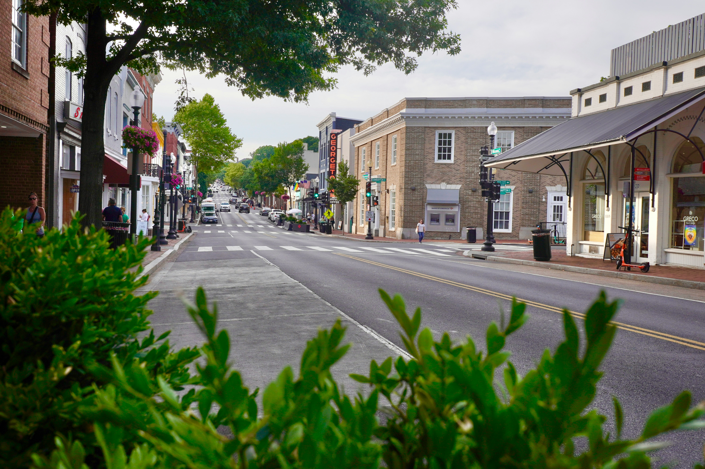
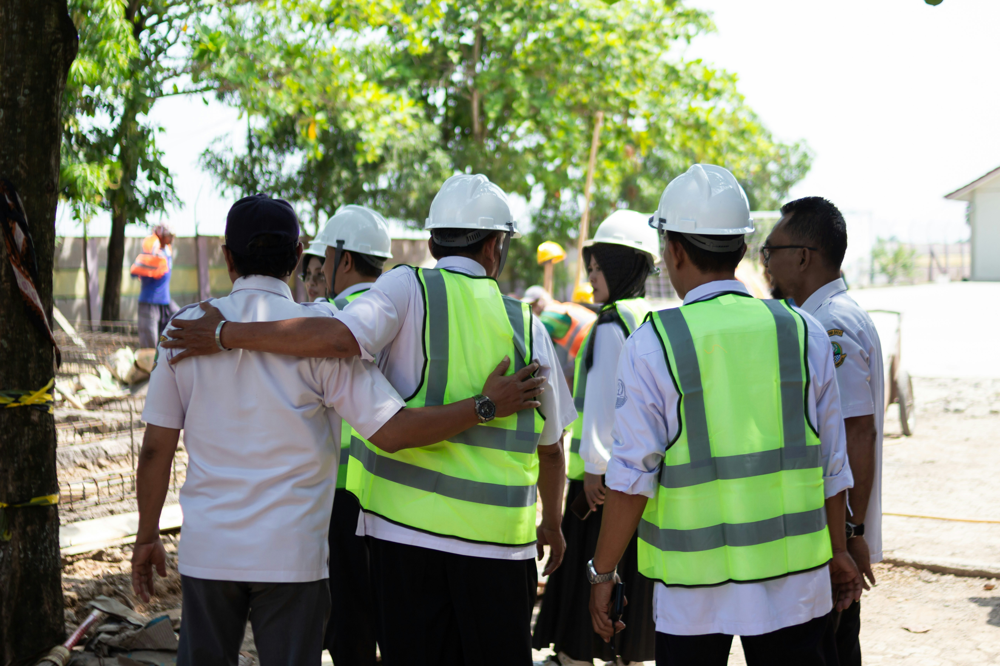

We started Groundwyre because the people planning roads, bridges, and water systems deserve software as good as the decisions they're making.

Most infrastructure decisions in America are still made the way they were in 1998: a spreadsheet nobody trusts, a paper packet nobody reads before the council meeting, and a public works director doing the math in their head because the software they were issued can't hold both a pavement condition score and a public comment in the same place.
Groundwyre started with a simpler observation than most GovTech pitches lead with: cities don't have a data problem. They have a stitching problem. A mid-sized city already collects pavement condition scores, traffic counts, stormwater sensor readings, capital budgets, and hundreds of resident complaints a year. What it doesn't have is a way to see all of it at once, decide what matters, and show its work to the public before a vote.
That gap is where projects stall, budgets get contested, and trust erodes — not because the government didn't care, but because nobody could see the reasoning.
Groundwyre exists to close that gap. It's built for the people who plan roads, bridges, water systems, and transit lines with public money and a public audience — and who need a platform that respects both the complexity of the decision and the scrutiny that follows it.
Not a poster in the break room — the things that shape how we build.
Every recommendation Groundwyre surfaces — a repaving priority, a risk score, a budget projection — comes with its reasoning attached. If a city manager can't explain a decision to a city council, the tool has failed, no matter how accurate it was.
Public works staff turn over. Councils change. Administrations flip. Groundwyre is designed so the next person in the seat can open it cold and understand what's been decided, why, and what's next.
Capital budgets move on multi-year cycles, bond votes, and grant deadlines. That doesn't mean the tools managing them should feel like they move at the same pace.
Community engagement isn't a form at the end of the process. We treat resident input as data that belongs in the same view as pavement scores and budget lines.
A team that's sat on both sides of the council table.

Co-founder & CEO
Spent seven years as a city engineer before spending the next five trying to fix the software he was issued.
Co-founder & CTO
Built prioritization and risk models for utilities before turning that work toward city infrastructure.
Head of Customer Success
Ten years as a public works director before joining Groundwyre to make sure the product survives contact with a real budget cycle.
If you've sat in a public works department or a council chamber, we want to talk to you.